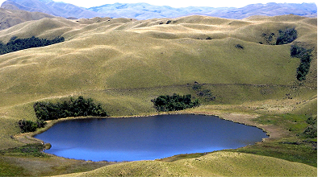
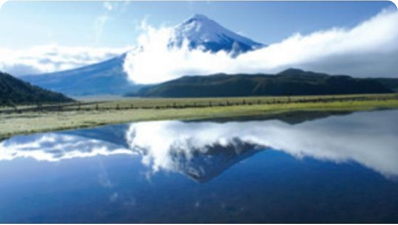
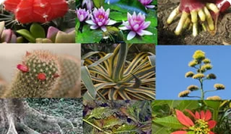
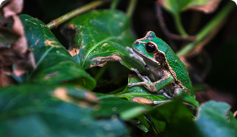
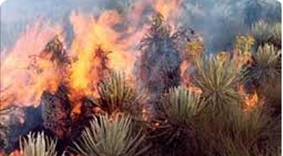
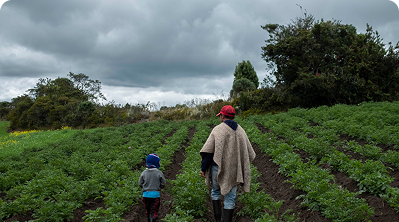
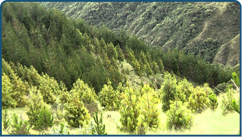

El páramo es un ecosistema de alta montaña tropical exclusivo de los Andes del norte — Ecuador, Colombia,
Venezuela y Perú. Se caracteriza por su vegetación baja y densa, sus frailejones, sus lagunas glaciales
y su capacidad única de capturar y almacenar agua de la niebla.
En Ecuador, el páramo ocupa aproximadamente el 6% del territorio nacional pero provee el 35% del agua
dulce del país, siendo esencial para la supervivencia de ciudades como Quito y Cuenca.
CARACTERÍSTICAS
¿Por qué es tan especial?

La esponja de agua de los Andes
Su suelo orgánico puede absorber hasta 10 veces su peso en agua, liberándola lentamente hacia los
ríos durante todo el año.

Clima extremo y único
Las temperaturas oscilan entre 0°C y 15°C con radiación UV muy alta. En un mismo día puede haber sol,
lluvia, granizo y neblina.

Flora altamente especializada
Las plantas desarrollaron adaptaciones únicas: hojas con pelos para retener calor, rosetas para
protegerse del viento, raíces profundas para anclar en suelos volcánicos.

Biodiversidad endémica
Muchas de las especies que habitan el páramo no se encuentran en ningún otro lugar del planeta, lo
que lo convierte en un hotspot de biodiversidad.
ZONIFICACIÓN
La zona del páramo
El páramo no es uniforme — se divide en zonas según la altitud, cada una con características y especies
propias.
3.000 – 3.500 msnm
Subpáramo
~12°Ctemperatura promedio
+200especies vegetales registradas
Zona de transición entre el bosque montano alto y el páramo abierto. Mayor diversidad de
arbustos y helechos. Presencia de polylepis (árbol de papel).
Especies representativas:
Polylepis
Gynoxys
Quilico
Baccharis
Lobo de páramo
CONSERVACIÓN
Principales amenazas del páramo
El páramo ecuatoriano enfrenta presiones crecientes que amenazan su integridad y función ecológica.

Quemas agrícolas
La quema para ampliar pastizales destruye la capa orgánica del suelo, reduciendo su capacidad de
retención hídrica.

Avance agrícola
La expansión de cultivos de papa y pastos hacia zonas de páramo reduce el área disponible para la
biodiversidad nativa.

Plantaciones exóticas
La introducción de pinos y eucaliptos consume grandes cantidades de agua y desplaza la vegetación
nativa del páramo.